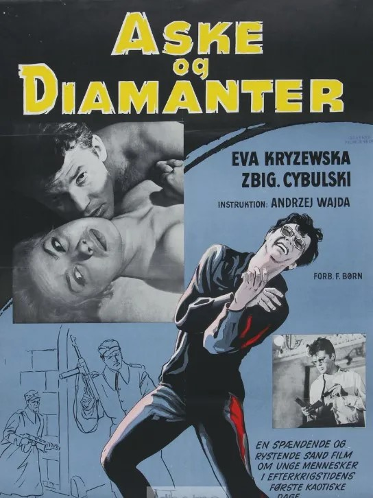
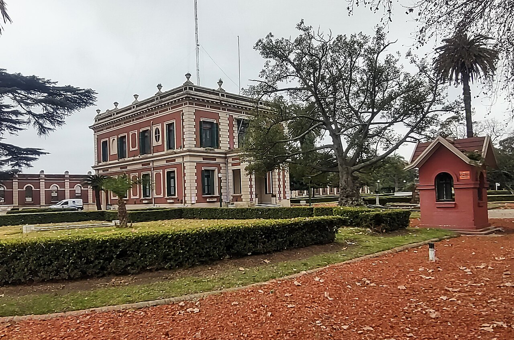
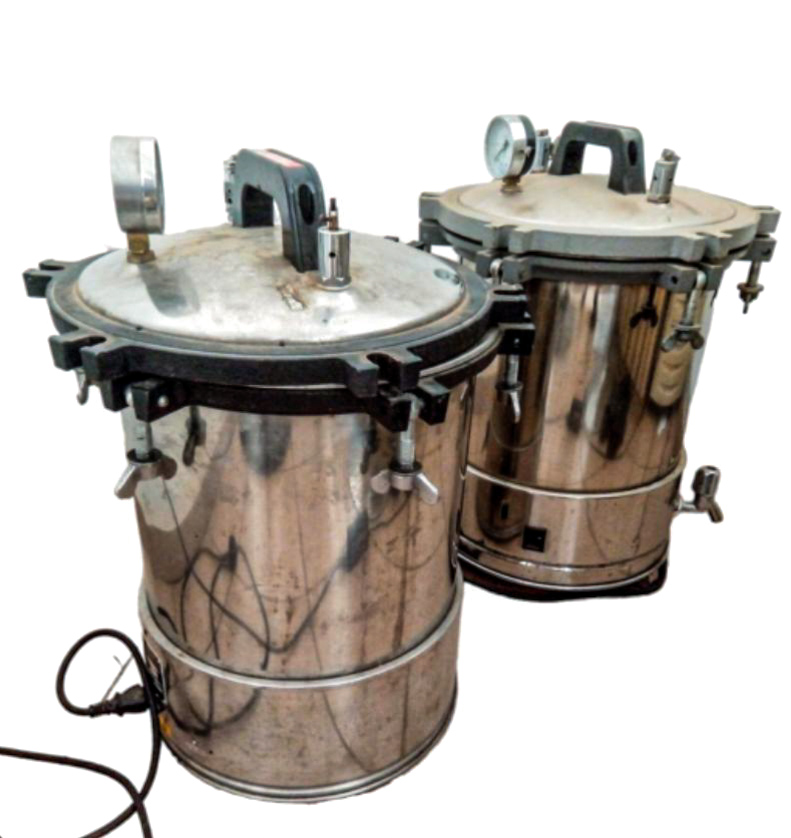
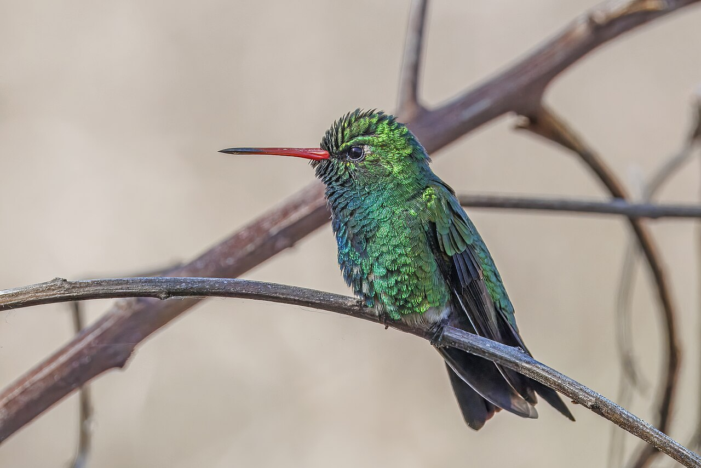

diario de la mañana — el mundo, tu ciudad y lo que te asombra
Nº 8Jueves 8 de octubre de 2026Buenos Aires≈ 35 min de lectura

Tapa: Zbigniew Cybulski, el «James Dean polaco», en Cenizas y diamantes (1958). Hoy es jueves de cine clásico. Foto: Unknown authorUnknown author · Public domain · Wikimedia CommonsCine clásico
Buen día. Hoy, 8 de octubre, César Milstein cumpliría 99 años: el bahiense que inventó los anticuerpos monoclonales y no los patentó. La edición sigue ese hilo, de los anticuerpos a las hormonas: un estudio danés sobre antifúngicos en el embarazo, unas esporas santafesinas que vigilan los autoclaves de medio mundo y unos camellos que sorprendieron a la inmunología. Es jueves de cine: Wajda en la Sala Lugones y los anteojos negros más famosos del cine polaco. Y justo a las 8, en Estocolmo, se anuncia el Nobel de Literatura.
13° / 19°Nublado, con lluvias aisladas y ráfagas del sector sur. Fresco todo el día. El SMN tiene alertas por tormentas y viento en 15 provincias, sobre todo en el Litoral; en la Ciudad, paraguas chico y abrigo.
España vuelve a votar, y los liceos franceses salen a la calle
EspañaSánchez adelanta las elecciones al 29 de noviembre
Pedro Sánchez.
El lunes, después de que el Congreso le rechazara las medidas de emergencia contra la crisis de la vivienda, Pedro Sánchez informó al rey Felipe VI, disolvió las Cortes y convocó elecciones generales para el domingo 29 de noviembre. Iban a ser en 2027. La vivienda es el gran tema: los alquileres en Madrid y Barcelona se dispararon, y en Barcelona las protestas terminaron con barricadas.
Por qué importa: en España viven cientos de miles de argentinos, y el precio de alquilar es uno de los temas que más se discuten también acá. Lo que se vote allá va a ser un termómetro de cómo responde Europa a la crisis de la vivienda.
FranciaMás de 250.000 estudiantes marcharon por la escuela pública
Lo que empezó a mediados de septiembre en un liceo de la región de París ya es un movimiento nacional. El martes hubo marchas en decenas de ciudades: 250.000 personas según el Ministerio del Interior, 450.000 según los organizadores. Reclaman contra los recortes del presupuesto educativo («somos 35 por curso, no alcanzan las sillas») mientras crece el gasto militar. Hubo gases lacrimógenos y cañones de agua en París, Estrasburgo, Rennes y Toulouse, y unas 2.000 detenciones de jóvenes. El primer ministro Lecornu las llamó las protestas estudiantiles más violentas en décadas.
Cuerno de ÁfricaEtiopía y Eritrea rompen relaciones
Mekele, capital de Tigré.
Etiopía cerró su embajada en Asmara y expulsó a diez diplomáticos eritreos; Eritrea respondió cortando todos los vínculos. Addis Abeba acusa a Eritrea de apoyar al TPLF, las fuerzas de Tigré que volvieron a combatir a fines de septiembre y llegaron a tomar los aeropuertos de Mekele, Aksum y Shire. Se cae así la paz de 2018, la que le valió el Nobel de la Paz a Abiy Ahmed.
Por qué importa: es una de las regiones más frágiles del mundo, con Sudán en guerra al lado y la salida al mar Rojo en disputa. Una nueva guerra entre los dos países tendría consecuencias para millones de personas.
IndiaLas «cucarachas» contra la Comisión Electoral
El movimiento juvenil Cockroach Janata Party (el «Partido Popular de las Cucarachas»), que nació en internet por el desempleo juvenil y las filtraciones de exámenes y en julio forzó la renuncia del ministro de Educación, arrancó una nueva ola de protestas. Ahora pide la renuncia del jefe de la Comisión Electoral: acusan que la revisión de los padrones, que en algunas regiones podría achicarlos hasta un 30 %, favorece al partido de Modi. La Comisión dice que solo saca duplicados.
SueciaHoy, Nobel de Literatura
La Academia Sueca anuncia el premio a las 13 de Estocolmo, las 8 de Buenos Aires: mientras leés esto. Las casas de apuestas ponen arriba a la china Can Xue, al japonés Haruki Murakami y a la canadiense Anne Carson. El año pasado lo ganó el húngaro László Krasznahorkai. Mañana, desde Oslo, el de la Paz.
Argentina y Buenos Aires no vivir adentro de un táper
Hoy se abren los sobres de AySA
AySA: cuánto ofrecen por el agua del AMBA

La planta potabilizadora General San Martín, en Palermo. Foto: Roberto Fiadone · CC BY 4.0 · Wikimedia Commons
A las 10, por la plataforma CONTRAT.AR, se abren las ofertas económicas por el 90 % de AySA. Quedaron dos consorcios de los 17 interesados: uno del grupo Roggio (con Aguas del Plata y Central Buen Ayre) y otro formado por Rowing, la brasileña Arcos Saneamento, PHX Aqua y Transclor. No hay precio base y gana la oferta más alta; se habla de entre 450 y 500 millones de dólares. La concesión es por 30 años, con unos 2.000 millones de dólares de inversión obligatoria en los primeros cinco.
El Presupuesto 2027 empieza a discutirse en Diputados
El Palacio del Congreso. Foto: Ezarate · CC BY-SA 4.0 · Wikimedia Commons
Los secretarios de Hacienda, Carlos Guberman, y de Finanzas, Federico Furiase, fueron a defender el proyecto en comisión. Prevé un crecimiento del 4 % y una inflación de alrededor del 20 % anual. El oficialismo no tiene los votos asegurados (ni el PRO acompaña la versión original), así que negocia partida por partida con los gobernadores. La fecha más mencionada para votarlo en el recinto es el 17 de octubre.
El Papa, en noviembre
León XIV estará en el país del 8 al 11 de noviembre. El lunes 9 es feriado nacional: ese día da misa en el Monumento a los Españoles, en Palermo, a las 11:30. Después viaja a Luján y a Córdoba.
Para hacer en la ciudad
«Andrzej Wajda: entre el mito y la historia», en la Sala Leopoldo Lugones (Teatro San Martín, Av. Corrientes 1530, piso 10): nueve películas restauradas que llegaron de Polonia, hasta el miércoles 14. Es la sección del día de hoy. Mirá la grilla en complejoteatral.gob.ar.
En la misma sala, del 15 al 22: «Seis tardes con Mae West». Anotalo para el jueves que viene.
Ciencia nivel colega
Antifúngicos azólicos en el embarazo: la esteroidogénesis fetal se mueve, y depende de cuándo
El clotrimazol y el miconazol son de los fármacos más usados en el embarazo: la candidiasis vulvovaginal es frecuente, y las cremas y óvulos se venden sin receta. Se consideran seguros porque la absorción sistémica de una aplicación tópica es baja. Un grupo danés (Mola, Draskau, Jørgensen, Hagen y colaboradores; DTU, Rigshospitalet y la cohorte de Odense) publicó en Communications Medicine un trabajo que combina tres niveles de evidencia (epidemiología, cultivo de tejido humano y modelo animal) y que muestra que esa exposición sí deja una huella en las hormonas esteroideas del feto.
El clotrimazol: el anillo de imidazol es el que se une al hierro del hemo.
Diseño y resultados
Cohorte prospectiva: 589 pares madre-hijo de la Odense Child Cohort, con uso de azoles registrado por trimestre, esteroides medidos y distancia anogenital (AGD), el marcador clásico de la acción androgénica prenatal.
Exposición temprana (primer trimestre): esteroides circulantes más bajos y signos de menor acción androgénica en varones, como un pene más angosto al nacer.
Exposición media a tardía: el patrón contrario: esteroides más altos y una AGD más larga, tanto en fetos femeninos como en varones lactantes.
Ex vivo: en cultivos de suprarrenal fetal humana, el clotrimazol baja la producción de progesterona.
In vivo: en ratas preñadas expuestas, el clotrimazol también baja la progesterona, y el miconazol alarga la AGD de las crías.
Seguimiento: a los 3 meses (la «minipubertad») los hijos expuestos tienen otros niveles de hormonas suprarrenales, aunque dentro del rango normal.
La conexión con lo que estudiás: por qué un antifúngico toca tus hormonas
Los azoles inhiben la CYP51 (lanosterol 14α-desmetilasa) del hongo y cortan la síntesis de ergosterol. El nitrógeno N3 del imidazol (o el N4 del triazol) se coordina directamente con el hierro del hemo en el sitio activo y desplaza al O₂. Ese mecanismo no es exclusivo de la CYP51 fúngica: nuestras enzimas de la esteroidogénesis también son citocromos P450. Las candidatas son la CYP11A1 (corte de la cadena lateral del colesterol), la CYP17A1 (17α-hidroxilasa/17,20-liasa, la llave hacia los andrógenos), la CYP21A2 y la CYP11B1 (glucocorticoides) y la CYP19A1 (aromatasa). El ketoconazol es tan buen inhibidor de la CYP17A1 y la CYP11A1 que se usa para tratar el síndrome de Cushing. Según qué enzima se bloquee primero, los precursores se acumulan antes del bloqueo y se desvían a otras ramas, y eso puede explicar por qué el efecto cambia de signo según el trimestre: la suprarrenal y la gónada fetales cambian de programa durante la gestación.
Lectura crítica
La parte humana es observacional: puede haber confusión por indicación (la candidiasis misma, la inflamación o el estado hormonal que la favorece). Los autores lo dicen: no pueden afirmar causalidad ni que los azoles sean dañinos.
n = 589, con subgrupos por trimestre y por sexo: muchas comparaciones y poco poder en cada estrato. Falta replicar en otra cohorte, con la exposición medida (azoles en plasma) y no solo declarada.
La rata no es un buen modelo de suprarrenal fetal humana (no tiene zona fetal ni produce DHEA en cantidad), y las dosis de los experimentos no siempre equivalen a la exposición real por vía vaginal.
Los cambios quedan dentro del rango normal, y no se sabe si tienen consecuencias clínicas (fertilidad, desarrollo puberal). Aun así, los autores proponen reevaluar el uso tópico de azoles durante el embarazo, dado que se venden libremente.
Mola G, Draskau MK, Jørgensen A, Hagen CP, et al. «Prenatal antifungal exposure disrupts fetal steroidogenesis and is associated with persistent effects in children». Communications Medicine 6, 473 (2026), doi:10.1038/s43856-026-01815-z · Medical Xpress
Biotec en el mundo real · Terragene: esporas santafesinas que certifican esterilizaciones

Un autoclave. Lo que asegura que funcionó es un vial con esporas. Foto: Frankincense Diala · CC0 · Wikimedia Commons
Terragene es una empresa santafesina (nació en Rosario y hoy produce en el Parque Industrial Micropi, en Alvear) que fabrica indicadores biológicos: la prueba final de que un autoclave, un esterilizador de óxido de etileno o de peróxido de hidrógeno realmente esterilizó. Su línea Bionova se usa en hospitales y en la industria farmacéutica, y algunos productos, como el BT95, tienen autorización de la FDA.
El organismo: esporas de Geobacillus stearothermophilus ATCC 7953, termófilo y con esporas muy resistentes al calor húmedo, el desafío más duro para un ciclo de vapor. Para óxido de etileno y calor seco se usa Bacillus atrophaeus. Cada indicador lleva una carga definida, típicamente 10⁶ esporas.
La cuenta detrás: la inactivación sigue una cinética de primer orden. El valor D es el tiempo que reduce la población 10 veces a una temperatura dada (para G. stearothermophilus a 121 °C, del orden de 1,5 a 2,5 minutos). Con 10⁶ esporas y el ciclo bien hecho, se llega a un nivel de garantía de esterilidad (SAL) de 10⁻⁶.
La lectura clásica: después del ciclo se rompe la ampolla interna, el medio con indicador de pH toma contacto con las esporas y se incuba a 60 °C. Si alguna sobrevivió, germina, fermenta, acidifica el medio y cambia el color. Tarda de 24 a 48 horas.
La lectura rápida (1 a 2 h): en vez de esperar el crecimiento se mide una enzima asociada a la espora, la α-glucosidasa, que sobrevive solo si la espora sobrevivió. La enzima hidroliza un sustrato fluorogénico (un glucósido de 4-metilumbeliferona) y libera 4-MU, que fluoresce con luz UV. Una incubadora lectora detecta la fluorescencia.
Salida laboral: microbiología industrial, validación de procesos, aseguramiento de la calidad bajo normas ISO 11138 y GMP. Es biotecnología sin ingeniería genética, y exporta.
Ciencia en la vida cotidiana · Por qué los anteojos polarizados borran los reflejos
Cuando la luz se refleja en una superficie horizontal (el agua, el asfalto mojado de hoy), la componente que vibra paralela a la superficie se refleja mucho más que la otra. En el ángulo de Brewster (unos 53° para el agua, porque tan θ = n = 1,33), la luz reflejada sale totalmente polarizada en horizontal. El filtro de un anteojo polarizado es una lámina de alcohol polivinílico (PVA) estirada para alinear las cadenas y teñida con yodo: se forman cadenas lineales de polyioduro (I₃⁻, I₅⁻) a lo largo del polímero, que absorben la luz cuyo campo eléctrico vibra paralelo a ellas. El filtro se monta con las cadenas en horizontal, así que el reflejo queda absorbido y la imagen del fondo pasa. Es el mismo principio del polaroid de Edwin Land, de 1938.
Probalo: mirá el agua de un charco con anteojos polarizados e inclinalos 90°: el reflejo vuelve. Lo mismo con la pantalla del celular, que también emite luz polarizada.
Mirá a tu alrededor árbol y ave de la semana
El azahar de los naranjos amargos y el picaflor que lo visita
Azahar: la flor del naranjo amargo. Foto: Zeynel Cebeci · CC BY-SA 4.0 · Wikimedia Commons

Picaflor común: pico rojo con la punta negra. Foto: Charles J. Sharp · CC BY-SA 4.0 · Wikimedia Commons
El árbol: naranjo amargo
Nombre científico
Citrus × aurantium (Rutáceas), un híbrido antiguo de pomelo (C. maxima) y mandarina (C. reticulata)
Dónde
Es uno de los árboles de vereda más comunes de Buenos Aires: copa redonda, hoja perenne verde oscura y frutos naranjas que nadie come (son amarguísimos).
Por qué ahora
Octubre es el mes del azahar: florcitas blancas de cinco pétalos carnosos que perfuman cuadras enteras, sobre todo al atardecer.
Química
Su aceite esencial es el neroli: linalol, acetato de linalilo, nerolidol y antranilato de metilo, entre otros. De las naranjas amargas se hace la mermelada inglesa y el Cointreau.
El ave: picaflor común
Nombre científico
Chlorostilbon lucidus (Troquílidos)
Cómo reconocerlo
Unos 9 cm, verde metalizado, con el pico rojo y la punta negra. El macho brilla más; la hembra tiene el vientre gris y una raya blanca detrás del ojo.
Por qué ahora
Es temporada de nidos: una tacita de 3 cm hecha con fibras vegetales y telas de araña, con dos huevos blancos del tamaño de un poroto.
Dato
Bate las alas unas 50 veces por segundo, y para sostener ese metabolismo toma néctar cada pocos minutos. A la noche puede entrar en torpor: baja la temperatura corporal para ahorrar energía.
Tu misión de hoy
Receta de estación primavera · con su química
Alcauciles al vapor con vinagreta de limón
Están en plena temporada y bien de precio. Se comen hoja por hoja, con las manos.
Alcauciles.
Ingredientes (2 porciones)
4 alcauciles
2 limones
Aceite de oliva, mostaza, sal y pimienta
1 diente de ajo y perejil (opcional)
Pasos
Cortá el tallo y la punta de las hojas, y frotá los cortes con medio limón. Dejalos en agua con el jugo de un limón mientras preparás el resto.
Cocinalos al vapor, boca abajo, de 30 a 40 minutos: están cuando una hoja del medio sale sin esfuerzo.
Vinagreta: 1 parte de jugo de limón, 3 de aceite, una cucharadita de mostaza, sal y pimienta. Batí hasta que espese.
Se arranca cada hoja, se moja y se raspa con los dientes. Al final, sacá la pelusa y comé el corazón.
La química de la receta
Por qué se pone negro: el alcaucil está cargado de polifenoles (ácido clorogénico y derivados cafeoilquínicos). Al cortarlo, la polifenol oxidasa (PPO), una enzima con cobre, oxida esos fenoles a o-quinonas, que polimerizan en pigmentos marrones. El limón actúa por dos vías: baja el pH (la PPO pierde actividad por debajo de pH 4) y el ácido ascórbico vuelve a reducir las quinonas a fenoles antes de que polimericen.
Por qué después el agua sabe dulce: la cinarina (ácido 1,3-dicafeoilquínico) y el ácido clorogénico inhiben de forma transitoria los receptores del sabor dulce (T1R2/T1R3) mientras están en la boca. Cuando el agua los lava y se liberan, el receptor «rebota» y se percibe dulzor. Por eso los sommeliers dicen que el alcaucil arruina cualquier vino.
La mostaza en la vinagreta es un emulsionante: su mucílago y sus proteínas se ubican en la interfase aceite-agua y estabilizan las gotitas.
Un clásico en cinco minutos
Cyprian Norwid, el poema que le dio título a «Cenizas y diamantes»
Un fragmento de 1862, en traducción propia.
Cyprian Kamil Norwid.
Una y otra vez, como astilla de tea, vuelan de vos a la redonda jirones encendidos; ardiendo, no sabés si te volvés libre o si lo tuyo está por perderse.
¿Quedará solo ceniza y confusión, que se va al abismo con la tormenta? ¿O quedará, en el fondo de la ceniza, un diamante estrellado, el alba de la victoria eterna?
Para entrar al poema
El poeta: Norwid murió pobre y olvidado en un asilo para emigrados polacos cerca de París, en 1883. Lo redescubrieron en el siglo XX, y hoy está a la altura de Mickiewicz y Słowacki en Polonia.
La imagen: el carbón y el diamante son el mismo elemento. La pregunta del poema es si el sufrimiento (el fuego) deja solo ceniza o si, a presión, produce algo duro y luminoso.
El puente con el cine: Jerzy Andrzejewski tomó la imagen para su novela de 1948, y Wajda la llevó al cine en 1958. En la película, Krystyna lee estos versos grabados en una cripta en ruinas. Para la generación que peleó en la guerra y después quedó del lado perdedor, la pregunta era literal.
La palabra del día de dónde viene
híbrido adjetivo y sustantivo
latín hibrida (cría de cerda y jabalí) → latín tardío hybrida, con la «y» de hýbris → castellano híbrido · francés hybride · inglés hybrid
En latín, hibrida o ibrida era el cerdo nacido de una cerda doméstica y un jabalí; después, por extensión, cualquier hijo de padres de distinto origen. La grafía con «y» apareció porque se lo asoció, por etimología popular, con el griego hýbris, la desmesura: mezclar lo que no debía mezclarse.
Milstein y Köhler hicieron exactamente eso en 1975: fusionaron un linfocito B (que fabrica un anticuerpo pero muere en cultivo) con una célula de mieloma (inmortal). El hibridoma heredó lo mejor de cada uno. Y el naranjo amargo de hoy también es un híbrido, de pomelo y mandarina.
Le français du matin semana 2: la hora
Le film est à huit heures du soir
La mañana, la tarde, la noche, y a qué hora. Escuchalo dos veces.
Il est midi. Je mange.
Le film est à huit heures du soir.
J'aime le cinéma.
Bonne soirée !
Il est midi.
Es mediodía. [il e mi-DÍ]
Je mange.
Como. [yə MANSH]
à huit heures du soir
a las ocho de la noche [a ui-TØR dü SUAR]
le film
la película [lə FILM]
J'aime le cinéma.
Me gusta el cine. [yem lə si-ne-MÁ]
Bonne soirée !
¡Que tengas una linda noche! [bon sua-RÉ]
Un truco
Para el momento del día: du matin (de la mañana), de l'après-midi (de la tarde), du soir (de la noche). Y para decir «a las…», solo à: à huit heures. Fijate que en huit heures la t se pega a la palabra siguiente: [ui-TØR]. Se llama liaison, y es lo que hace que el francés suene «encadenado».
À toi:
English corner level C1 · film writing
A pair of sunglasses in 1945
Andrzej Wajda's Ashes and Diamonds takes place over a single night: 8 May 1945, the last day of the war in Europe. Its hero, Maciek, is a young resistance fighter ordered to assassinate a communist official in a provincial Polish town. By rights, he should look like a soldier who has spent years in the forest. Instead, Zbigniew Cybulski turned up on set in canvas sneakers, tight jeans, a green jacket and dark glasses, clothes that belonged unmistakably to 1958, the year the film was shot.
Wajda could have put his foot down. He chose not to, reasoning that his lead actor understood the new generation better than he did. It was a gamble that paid off handsomely. Audiences who had been too young to fight saw in Maciek not a relic of the war but one of their own: restless, ironic, doomed. Critics dubbed Cybulski "the Polish James Dean", and the sunglasses, worn even at night, became shorthand for a whole generation's guardedness.
Decades later, Wajda would remark that if his films had given people one thing for certain, it was Cybulski's sunglasses. It is a wry admission from a director who wrestled with history all his life, and a reminder that a costume can say more than a speech.
by rights — en rigor, si las cosas fueran como corresponde
to turn up — aparecer, presentarse
unmistakably — inconfundiblemente
to put one's foot down — plantarse, imponer la autoridad
to pay off handsomely — dar muy buenos resultados
to dub — apodar (también: doblar una película)
shorthand for — una forma abreviada de decir, un símbolo de
wry — irónico, con humor seco
Your turn (answer in English):
Jueves de cine clásico
«Cenizas y diamantes» (Andrzej Wajda, 1958)
En la Sala Lugones, dentro del ciclo Wajda, hasta el 14 de octubre. Mañana se cumplen diez años de la muerte del director.
Andrzej Wajda. Foto: AnonymousUnknown author / Lehtikuva · Public domain · Wikimedia CommonsZbigniew Cybulski.
Polonia, 8 de mayo de 1945. Alemania capitula, pero en un pueblo de provincia la guerra sigue por otros medios. Maciek Chełmicki es un joven del Ejército Nacional (la resistencia leal al gobierno en el exilio en Londres) y tiene la orden de matar a Szczuka, un dirigente comunista que acaba de llegar. Esa noche, en el bar del hotel donde se festeja el fin de la guerra, conoce a Krystyna, la camarera, y por unas horas imagina otra vida.
Es la tercera película de la trilogía de guerra de Wajda, después de Generación (1955) y Kanal (1957), y se basa en la novela de Jerzy Andrzejewski. Se filmó bajo la censura comunista, y aun así el héroe es el que está del lado perdedor: por eso fue una bomba. Este año se vio en Venecia, en la sección Clásicos, en copia restaurada.
Qué mirar
Los vasos encendidos: en la barra, Maciek prende fuego el alcohol de una fila de vasos, uno por cada compañero muerto. Es una de las escenas más famosas del cine europeo.
La cripta: Krystyna lee en una lápida los versos de Norwid que tenés en el clásico de hoy.
La profundidad de campo: el fotógrafo Jerzy Wójcik compone en varios planos a la vez, a la manera de El ciudadano de Welles.
El final en un basural, con Maciek retorciéndose. No te lo cuento más.
Moda en pantalla · El vestuario que no era de 1945
La mayoría de los vestuarios clásicos tienen firma: Edith Head, Givenchy, Travilla. Este no. Según contó Wajda, Cybulski llegó al rodaje ya vestido: pepegi (las zapatillas de lona que se usaban en Polonia), jeans ajustados, una campera verde y anteojos negros. Ropa de 1958, no de 1945. Wajda pensó en pelear y decidió que no: «quizás él entendía a esa generación mejor que yo».
Por qué funciona: el anacronismo convierte a Maciek en un contemporáneo del público. La investigadora Grażyna Stachówna escribe que los anteojos no correspondían a 1945: eran el atributo de la siguiente generación de jóvenes polacos, una manera de esconder los ojos y marcar distancia.
El jean detrás de la Cortina de Hierro: en la Polonia de los 50 era una prenda escasa, de contrabando o de paquetes que mandaban parientes desde Occidente. Ponérselo era una declaración.
La herencia: la campera, el jean y los anteojos oscuros de día y de noche son, desde James Dean y Cybulski, el uniforme del rebelde en el cine. Wajda decía que, si algo les habían dado sus películas a los espectadores, eran los anteojos de Cybulski.
Y Cybulski: murió en 1967, con 39 años, al intentar subirse a un tren en marcha en Breslavia (Wrocław), como hacía en sus películas.
Hoy en la historia · un lugar en el mapa
8 de octubre de 1927: nace César Milstein
César Milstein.
Hijo de un inmigrante judío ucraniano y de una maestra, Milstein nació en Bahía Blanca, estudió Química en la UBA y se doctoró con Andrés Stoppani. Se fue a Cambridge, volvió a dirigir Biología Molecular en el Instituto Malbrán, y después del golpe de 1962 y de la persecución a los científicos se instaló para siempre en el Laboratorio de Biología Molecular del MRC, en Cambridge. Ahí, con el posdoctorando alemán Georges Köhler, publicó en Nature en 1975 «Continuous cultures of fused cells secreting antibody of predefined specificity»: la técnica del hibridoma. Ganaron el Nobel en 1984, con Niels Jerne.
Ni Milstein ni el MRC patentaron la técnica, y Milstein compartió sus células de mieloma con quien se las pidiera.
Margaret Thatcher se lo reprochó públicamente, y otros (el Instituto Wistar, en Filadelfia) patentaron usos del hibridoma. Hoy los anticuerpos monoclonales son la familia de fármacos más vendida del mundo, del adalimumab al pembrolizumab, y los biosimilares que se fabrican en Garín, de los que hablamos en la edición Nº 2, descienden de ese trabajo.
El lugar: Bahía Blanca
Bahía Blanca.
Dónde
Al sudoeste de la provincia de Buenos Aires, a unos 650 km de la Capital, sobre el estuario que le da el nombre.
El nombre
Por el color blanco de las costas, cubiertas de salitre, que vieron los navegantes.
Hoy
Tiene el principal puerto de aguas profundas del país, el polo petroquímico de Ingeniero White y la Universidad Nacional del Sur.
Conexión
Milstein, los anticuerpos y la palabra «híbrido»: el hilo de esta edición.
Lo que me asombra hoy
Los anticuerpos de los camellos, descubiertos en un trabajo práctico
A fines de los 80, en la Universidad Libre de Bruselas, el grupo de Raymond Hamers les dio a sus estudiantes suero de dromedario para un trabajo práctico de inmunología, porque el de ratón se había acabado. Al analizarlo, apareció algo que no debía existir: IgG sin cadenas livianas, hechas solo de dos cadenas pesadas. Lo publicaron en Nature en 1993 (Hamers-Casterman et al., doi:10.1038/363446a0). Los camélidos (también las llamas y las alpacas) tienen estos anticuerpos de cadena pesada además de los convencionales.
El dominio variable de esas cadenas, el VHH o «nanobody», reconoce antígenos solo, pesa unos 15 kDa (una décima parte de una IgG), se expresa bien en bacterias y levaduras y aguanta temperaturas que desnaturalizarían a un anticuerpo común. En 2018 se aprobó el primero como fármaco, el caplacizumab. Milstein inventó la forma de producir anticuerpos a medida; un práctico de estudiantes encontró uno que la naturaleza ya había achicado.
Pasatiempo sudoku · nivel medio
Para antes de la función
Completá cada fila, cada columna y cada caja de 3×3 con los números del 1 al 9, sin repetir. Tiene una sola solución.
47267154458534193435827491692587
Cuaderno para repasar lo de hoy
Repaso y quiz de la mañana
Repaso de idiomas
Quiz
¿Qué enzima fúngica inhiben los azoles?
¿Con qué se une el imidazol del clotrimazol en el sitio activo?
¿Qué organismo llevan los indicadores biológicos para vapor?
¿Qué mide la lectura rápida de un indicador biológico?
¿Por qué el alcaucil cortado se pone negro?
El naranjo amargo es un híbrido de…
¿Qué llevaba Cybulski en «Cenizas y diamantes»?
¿Qué fusionaron Milstein y Köhler?
«Le film est à huit heures du soir» significa…
«To put one's foot down» significa…
Escritura: tres líneas para hoy
Soluciones tocá para destapardadas vuelta, para no espiar
Quiz: CYP51 · el hierro del hemo · esporas de G. stearothermophilus · la fluorescencia de una enzima · polifenol oxidasa · pomelo y mandarina · jeans, campera verde y anteojos · linfocito B y mieloma · a las ocho de la noche · plantarse.
Repaso: il est huit heures et demie · il est huit heures · j'habite à Buenos Aires · abordable, manejable · el que corre de atrás, el menos favorito · una tarea difícil, mucho pedir.
Français 1: Le film est à neuf heures du soir.
English 1 (por ejemplo): He felt Cybulski understood the post-war generation better than he did, and the anachronism made Maciek a contemporary of the audience.


_male_Colonia.jpg){kind=link}